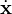
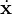
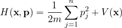
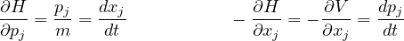
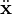
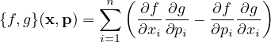
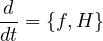
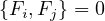

Integrable Systems
Contents
This page is my own note to help answering the question that I got a lot from fellow mathematicians ”What is an integrable system?”. In short, the study of integrability revolves around finding conserved quantities (independent of time) of a dynamical system. Here I provide 2 notions of integrability.
1 Classical Integrable System and Liouville Integrability
3 helpful resources for the study of integrability are [Sut04], [BBT03] and [Hal13]
Consider the most simple case: the motion of a particle moving in ℝn. Then the position of a particle is an n-dimensional real vector x = (x1,…,xn). Consider each coordinate of the vector as a function of time x(t) = (x1(t),…,xn(t)), the derivative of the position with respect to time provide the velocity , denoted (t). From the Hamiltonian approach to classical mechanics, the energy function is a function of position and momentum ()p = m(t), where m is the mass).
For a usual classical system, there are two sorts of energy (kinetic and potential energy). Thus, we can realize the Hamiltonian as a function on ℝ2n defined by:
|

| (1) |
where V (x) is any potential energy function. Via this equality, we obtain the Hamiltonian’s equation:
|

| (2) |
The seond equation follows from Newton’s Law m(t) = F(x(t),(t)).
Definition 1.1 (Poisson Bracket). Let f and g be two smooth functions on ℝ2n, i.e. entries are (x,p) (the space of all these vectors is called the phase space). Then the Poisson bracket of f and g, denoted {f,g} is the function:
|

| (3) |
By direct calculation we can check some properties of Poisson bracket:
Proposition 1.2. For smooth functions f,g and h on ℝ2n we have:
- {f,g + ch} = {f,g} + c{f,h} for all c ∈ ℝ
- {g,f} = -{f,g}
- {f,gh} = {f,g}h + g{f,h}
- {f,{g,h}} = {{f,g},h} + {g,{f,h}}
Note that property 1), 2), 4) implies bilinearity, skew-symmetry and Jacobi identity respectively, which confirms that the space of smooth functions on ℝ2n forms a Lie algebra under the Poisson bracket. Lie algebra plays an important role in mathematical physics and definitely worth a section for itself on my website.
Some other easy to compute relations for the position and momentum functions are:
where δij is the Kronecker Delta function. The following proposition is crucial to understand the idea of integrability:
Proposition 1.3. Given a vector (x(t),p(t)) on the phase space that satisfies the Hamiltonian equation (2), then for any smooth function f on ℝ2n we have
when there is no ambiguity we write this proposition as:
|

| (4) |
Now, if the ”quantity” f above is independent of time, that means d∕dt = 0 = {f,H}, then we called f is a conserved quantity or constant of motion. Of course, by this definition, H itself is a conserved quantity which should be expected because we are claiming that the energy is conserved in time-evolution. People studying classical mechanics might also realize by now that the angular momentum is also a conserved quantity. It is well-known that finding these conserved quantities f is difficult and most of them are not exactly solved (analytically). However, if we assume to have enough of them then the solution can be found exactly by quadrature, i.e. by solving a finite number of algebraic equations and computing finite number of integrals, (known as Liouville Theorem, different from the famous Liouville Theorem in complex analysis). These systems are said to be Liouville integrable systems. We are now ready to define Liouville integrability rigorously
Definition 1.4 (Liouville Integrability). A system with n degrees of freedom (with a 2n-dimensional phase space) is said to be Liouville integrable if there exists n independent conserved quantities fi such that {fi,H} = 0 which are in involution,
|

| (6) |
Theorem 1.5 (Liouville Theorem). The solution of the equations of motion of a Liouville integrable model can be obtained by quadrature (i.e. by solving algebraic equation and taking some integrals)
The proof for this theorem can be found in detail in [BBT03]
Of course, we do not want to just work with a system of only 1 particle. In fact, the reality is that we always have system of many particles. In that case the Hamiltonian is more complicated because the energy of each particle is not conserved because the particle interacting with each other. However, we can still talk about the total energy of the system as a function of N particles’ states via the Newton’s law:
2 Quantum Integrability
References
[BBT03] Olivier Babelon, Denis Bernard, and Michel Talon. Integrable dynamical systems, page 5–31. Cambridge Monographs on Mathematical Physics. Cambridge University Press, 2003.
[Hal13] B.C. Hall. Quantum Theory for Mathematicians. Graduate Texts in Mathematics. Springer New York, 2013.
[Sut04] Bill Sutherland. Beautiful models: 70 years of exactly solved quantum many-body problems. World Scientific, first edition edition, 2004.